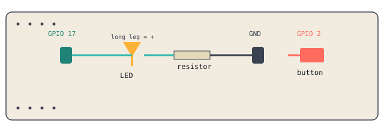

1 LED · 1 resistor (220Ω–330Ω) · 1 breadboard · 1 push button · jumper wires

Simplified schematic. Match wire colors to the labels above, not to real wire color.
Push the LED into the breadboard so its two legs sit in different rows. The longer leg is positive, note which row it's in.
Connect the resistor between the LED's positive leg and an empty row. The resistor protects the LED from too much current.
Run a wire from GPIO 17 to the resistor's row.
Run a wire from the LED's negative leg to a GND pin.
from gpiozero import LED from time import sleep led = LED(17) led.on() sleep(1) led.off()
Run it from the terminal: python3 led.py
for i in range(10):
led.on()
sleep(0.5)
led.off()
sleep(0.5)
Keep your LED circuit exactly as it is. Add a push button, one leg to GPIO 2, the opposite leg to GND.
from gpiozero import LED, Button led = LED(17) button = Button(2) button.when_pressed = led.on button.when_released = led.off
LED blinks correctly when you run your code
Button turns the LED on and off
Worksheet observations filled in
Engineering notebook wiring log filled in